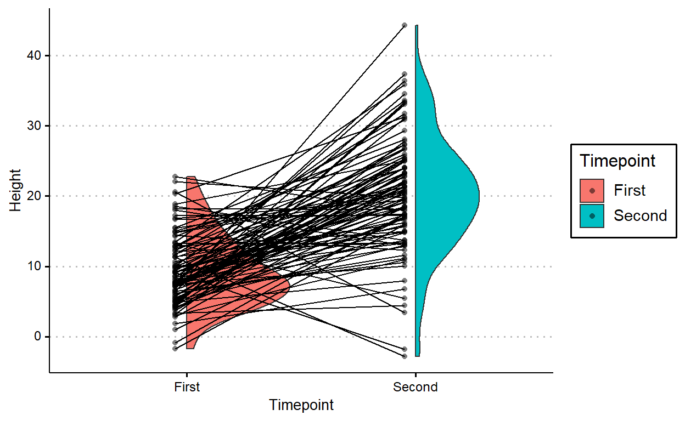
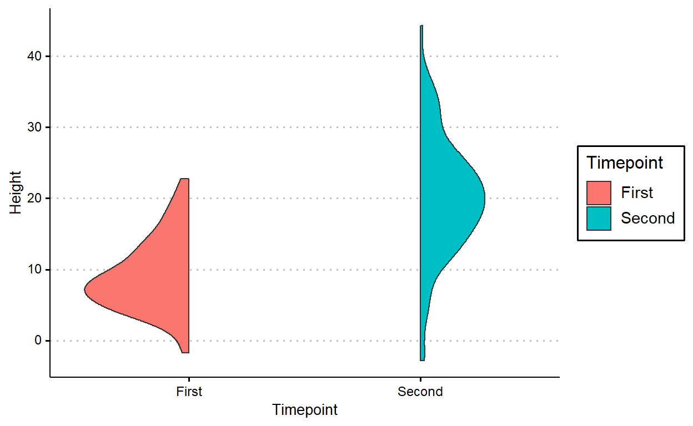
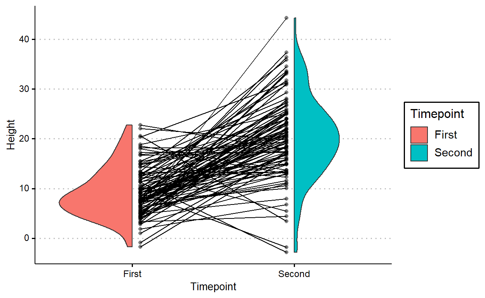
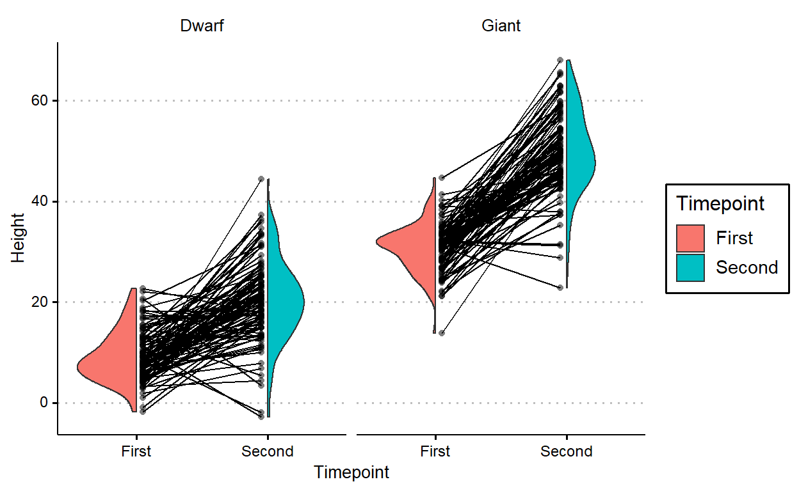
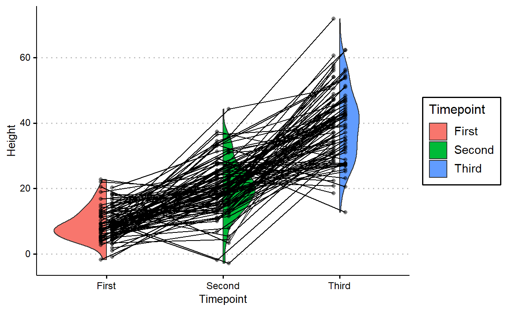

Raincloud Plots
Geoms for rainplots (a.k.a. split violin plots) already exist, but you might have a very special case where you have pairs of rainplots and you want to track the change in individual datapoints between the rainplot distributions.
For example, say you want to track the height of a plant species across two timepoints and you want to communicate three information:
The change in the distribution of plant heights between timepoints.
The individual variation in height (“intercept”).
The individual variation in change of height between timepoints (“slope”).
And the data looks like this:
set.seed(1234)
plants <- tibble(Species = "Dwarf",
Plant = rep(factor(1:100), 2),
Timepoint = rep(c("First", "Second"), each = 100),
Height = c(rnorm(100, 10, 5), rnorm(100, 20, 8)))
plants %>%
group_by(Timepoint) %>%
summarize(across(Height, list(mean = mean, sd = sd), .names = "{col}_{fn}"))
# A tibble: 2 x 3
Timepoint Height_mean Height_sd
<chr> <dbl> <dbl>
1 First 9.22 5.02
2 Second 20.3 8.26You can use geom_violhalf() from the {see} package to do this:
library(see)
ggplot(plants, aes(Timepoint, Height, fill = Timepoint)) +
geom_violinhalf() +
geom_point(aes(group = Plant),
position = position_nudge(-.05),
alpha = 0.5, shape = 16) +
geom_line(aes(group = Plant),
position = position_nudge(-.05))
But it’d look better if the lines don’t cross over the raincloud for the first timepoint.
geom_paired_raincloud() automatically flips the first raincloud for you! You do get a warining that there are overlapping points, but that’s because the x-axis is categorical and {ggplot2} thinks that flipping the raincloud intrudes into a different category. AFAIK you don’t lose any data despite this warning, but you should double check to be sure.
devtools::source_url("https://raw.githubusercontent.com/yjunechoe/geom_paired_raincloud/master/geom_paired_raincloud.R")
ggplot(plants, aes(Timepoint, Height, fill = Timepoint)) +
geom_paired_raincloud()
Warning: position_dodge requires non-overlapping x intervals
We can add individual points and lines onto this plot in a similar way, except you need to use a 2-length vector for position_dodge().
plants %>%
# arrange by individual plant
arrange(Plant) %>%
ggplot(aes(Timepoint, Height, fill = Timepoint)) +
geom_paired_raincloud() +
geom_point(aes(group = Plant),
position = position_nudge(c(.05, -.05)),
alpha = 0.5, shape = 16,
show.legend = FALSE) +
geom_line(aes(group = Plant),
position = position_nudge(c(.05, -.05)))
geom_paired_raincloud works as long as the grouping is of length two (i.e., as long as you’re comparing distribution between two levels).
Let’s modify the plants dataset to include another species of plant:
plants2 <- plants %>%
bind_rows(
tibble(Species = "Giant",
Plant = rep(factor(101:200), 2),
Timepoint = rep(c("First", "Second"), each = 100),
Height = c(rnorm(100, 30, 5), rnorm(100, 50, 8)))
)
plants2 %>%
group_by(Species, Timepoint) %>%
summarize(across(Height, list(mean = mean, sd = sd), .names = "{col}_{fn}"))
# A tibble: 4 x 4
# Groups: Species [2]
Species Timepoint Height_mean Height_sd
<chr> <chr> <dbl> <dbl>
1 Dwarf First 9.22 5.02
2 Dwarf Second 20.3 8.26
3 Giant First 30.8 4.80
4 Giant Second 49.9 8.40In this new plot, I just added facet_wrap(~Species)
plants2 %>%
arrange(Plant) %>%
ggplot(aes(Timepoint, Height, fill = Timepoint)) +
geom_paired_raincloud() +
geom_point(aes(group = Plant),
position = position_nudge(c(.05, -.05)),
alpha = 0.5, shape = 16,
show.legend = FALSE) +
geom_line(aes(group = Plant),
position = position_nudge(c(.05, -.05))) +
facet_wrap(~Species)
geom_paired_raincloud() isn’t particularly useful for plotting comparisons between more than two levels, so it throws a warning when that’s the case:
# Adding a third timepoint
plants3 <- plants %>%
bind_rows(tibble(Species = "Dwarf",
Plant = factor(1:100),
Timepoint = "Third",
Height = rnorm(100, 40, 10)))
plants3 %>%
group_by(Timepoint) %>%
summarize(across(Height, list(mean = mean, sd = sd), .names = "{col}_{fn}"))
# A tibble: 3 x 3
Timepoint Height_mean Height_sd
<chr> <dbl> <dbl>
1 First 9.22 5.02
2 Second 20.3 8.26
3 Third 39.8 11.2
plants3 %>%
arrange(Plant) %>%
ggplot(aes(Timepoint, Height, fill = Timepoint)) +
geom_paired_raincloud() +
geom_point(aes(group = Plant),
position = position_nudge(c(.05, -.05)),
alpha = 0.5, shape = 16,
show.legend = FALSE) +
geom_line(aes(group = Plant),
position = position_nudge(c(.05, -.05)))
But I think geom_paired_raincloud() works great if you have the right data. Here’s an example from my recent work, looking at the variation in how subjects respond to stimuli when they’re presented in one condition (Subject Accent) compared to the other (Verb Accent).